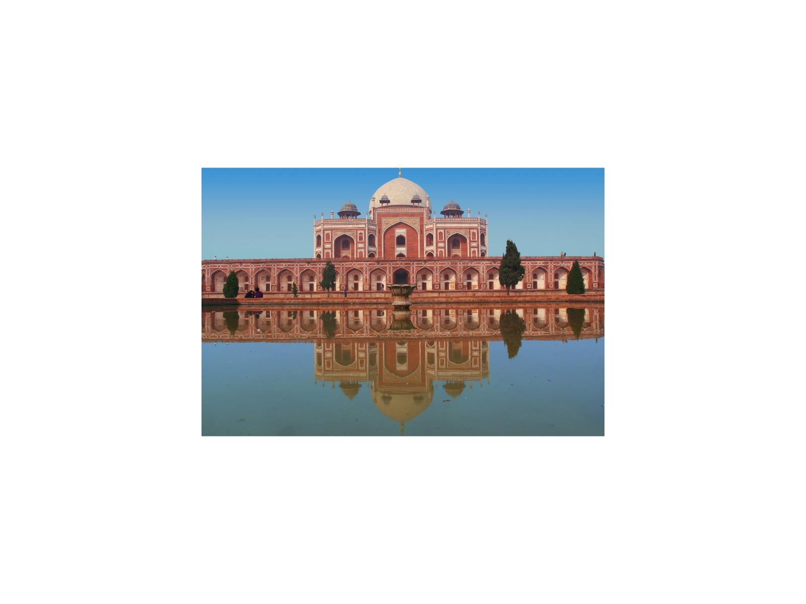

Overview
Amber Fort (Amer) stands on a hill above Maota Lake, the old seat of the Kachhwaha Rajput rulers before Jaipur was founded. Begun by Raja Man Singh I in 1592, it blends red sandstone and white marble with Rajput and Mughal design.
It is part of the UNESCO-listed Hill Forts of Rajasthan.
What to look for
- Sheesh Mahal, the hall of mirrors
- Ganesh Pol, the painted gateway
- Sukh Niwas and the garden courtyards
- The view over Maota Lake from the ramparts
Visiting tips
- Arrive at opening to beat the crowds and the heat.
- Walk up or take a jeep. Elephant rides operate at the fort, but many travellers prefer not to use them.
- Jaigarh Fort on the hill above is a short drive away.
- Wear shoes with grip: the ramps and stone steps can be slippery.
Why visit with a private guide
A private guide shows you where to stand, when to arrive and what most visitors miss at Amber Fort, and fits the visit around the rest of your day.
More photographs


Nearby
Chand Baori City Palace Hawa Mahal Jal Mahal Jantar Mantar Nahargarh Fort Jaigarh Fort
Journeys that include Amber Fort
1 Day1-Day Jaipur Royal Express: Private Tour from Delhi
Amber Fort, the City Palace and the Pink City's best-known sights in one long day from Delhi, for travellers who have only a day to give.
View journey → 2 Days
2 Days2-Day Agra & Jaipur Express: Taj Mahal & the Pink City
The Taj Mahal at sunset and the forts and palaces of Jaipur, on a fast overnight that rewards early risers.
View journey → 2 Days
2 Days2-Day Jaipur Royal Pink City & Abhaneri Stepwell Escape
Chand Baori's ancient stepwell and Jaipur's forts and palaces over two days, with sunset from Nahargarh.
View journey →
3 Days3-Day Golden Triangle Essentials: Delhi, Agra & Jaipur
Delhi, Agra and Jaipur in three days: the essentials of India's classic circuit, with a private guide throughout.
View journey →4 Days4-Day Express Golden Triangle: Delhi, Jaipur & Agra
The complete Golden Triangle in four days, from Old Delhi's lanes to Jaipur's forts, Fatehpur Sikri and a sunrise at the Taj.
View journey →5-Day Classic Golden Triangle: Royal Rajput & Mughal Journey
A classic Golden Triangle with room to breathe: Jaipur's hill forts, the Chand Baori stepwell and a sunrise at the Taj.
View journey →Tell me your dates and interests
I will personally prepare an itinerary and quotation within 24 hours. No groups, no fixed scripts.